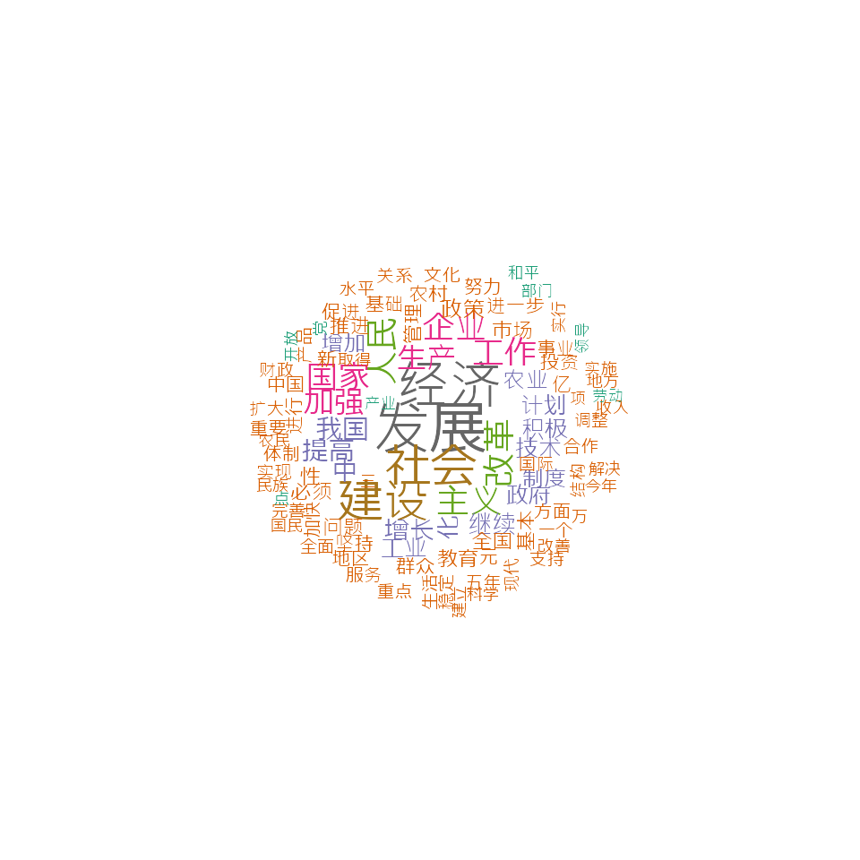

chinese.RmdDownload corpus constructed from Report on the Work of the Government published by Premier of the State Council between 1954 and 2017. You can download the corpus using the quanteda.corpora package.
# Chinese stopwords
ch_stop <- stopwords("zh", source = "misc")
# tokenize
ch_toks <- corp %>%
tokens(remove_punct = TRUE) %>%
tokens_remove(pattern = ch_stop)
# construct a dfm
ch_dfm <- dfm(ch_toks)
topfeatures(ch_dfm)## 发展 经济 社会 建设 改革 人民 主义 工作 企业 国家
## 5627 5036 4255 4248 2931 2897 2817 2642 2627 2595# plot a word cloud
set.seed(100)
# to set the font correctly for macOS
textplot_wordcloud(ch_dfm, min_count = 500, random_order = FALSE,
rotation = .25, max_words = 100,
min_size = 0.5, max_size = 2.8,
font = if (Sys.info()['sysname'] == "Darwin") "SimHei" else NULL,
color = RColorBrewer::brewer.pal(8, "Dark2"))
# fcm within the window size of 5
ch17_corp <- corpus_subset(corp, Year == "2017")
ch17_toks <-
tokens(ch17_corp, remove_punct = TRUE) %>%
tokens_remove(ch_stop)
ch_fcm <- fcm(ch17_toks, context = "window")
topfeatures(ch_fcm["改革", ])## 推进 制度 性 体制 完善 试 点 供给 侧 结构
## 23 19 11 11 10 8 8 7 7 7# bigrams cross the whole dataset
ch_col <- textstat_collocations(ch_toks, size = 2, min_count = 20)
knitr::kable(head(ch_col, 10))| collocation | count | count_nested | length | lambda | z |
|---|---|---|---|---|---|
| 社会 主义 | 1787 | 0 | 2 | 5.661200 | 128.61741 |
| 亿 元 | 689 | 0 | 2 | 7.445259 | 93.01487 |
| 现代 化 | 632 | 0 | 2 | 6.950471 | 83.55186 |
| 体制 改革 | 504 | 0 | 2 | 5.193066 | 77.37908 |
| 五年 计划 | 341 | 0 | 2 | 5.359068 | 71.64727 |
| 各级 政府 | 306 | 0 | 2 | 6.110596 | 66.63454 |
| 增长 百分 | 300 | 0 | 2 | 5.520761 | 65.88051 |
| 万 吨 | 212 | 0 | 2 | 6.589957 | 62.56344 |
| 国民 经济 | 589 | 0 | 2 | 6.014672 | 61.80426 |
| 充分 发挥 | 191 | 0 | 2 | 6.584129 | 61.24885 |
# bigrams in 2017 report
ch17_col <- textstat_collocations(ch17_toks, size = 2)
knitr::kable(head(ch17_col, 10))| collocation | count | count_nested | length | lambda | z |
|---|---|---|---|---|---|
| 人民 群众 | 12 | 0 | 2 | 5.406485 | 12.89405 |
| 亿 元 | 14 | 0 | 2 | 8.302483 | 12.62130 |
| 调 控 | 11 | 0 | 2 | 7.593472 | 12.41243 |
| 政府 工作 | 9 | 0 | 2 | 4.709869 | 11.07905 |
| 深入 实施 | 8 | 0 | 2 | 5.018234 | 10.92377 |
| 党 中央 | 7 | 0 | 2 | 5.746878 | 10.90837 |
| 体制 改革 | 11 | 0 | 2 | 5.317035 | 10.53518 |
| 国内 生产 | 6 | 0 | 2 | 6.166520 | 10.48816 |
| 现代 化 | 8 | 0 | 2 | 5.705688 | 10.43435 |
| 基础 设施 | 7 | 0 | 2 | 7.549273 | 10.42465 |